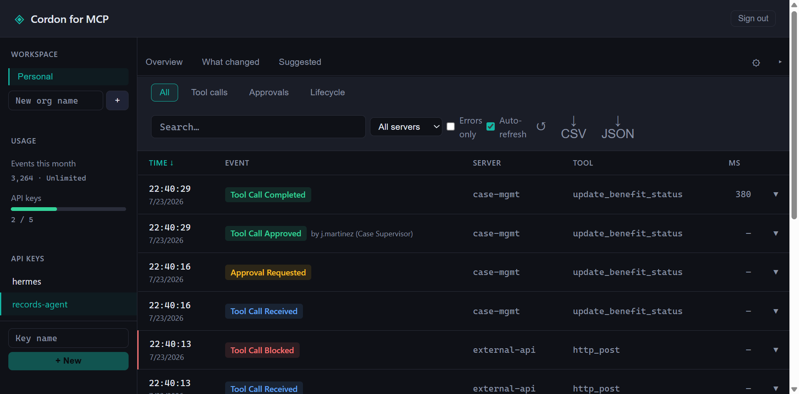

That's exfiltration in two steps, and per-tool allowlists can't see it. Cordon tracks the call graph inside an agent turn and blocks the shape of the attack — not just individual tools.
Glob the names, match the order.
policy: {
sequences: [
{
pattern: ['read_*', 'write_file'],
action: 'block',
reason: 'Potential exfil — read followed by write in same turn'
}
]
}Each read is allowed on its own. The sequence gets caught.
No other MCP gateway does this at the policy layer. See how Cordon compares →
Cordon is a transparent proxy. It requires no changes to your existing MCP servers
or client config — cordon init handles the wiring. Every call is
checked against your policy and streamed to the audit log on the way through.
Claude Desktop / Code / n8n
│ stdio or HTTP
▼
Cordon ──stdio──▶ MCP server A
├────stdio──▶ MCP server B
└────stdio──▶ MCP server N
Any MCP client, any MCP server. Cordon speaks stdio — the transport every
major client already uses — and Streamable HTTP for a shared team gateway
(n8n and other HTTP-speaking clients). cordon init auto-patches
supported clients; others drop in with a one-line config change.
Using an MCP server? If it runs over stdio, Cordon proxies it — no server-side changes required.
Block entire tool categories or specific tools by name. Reads pass, writes require approval — or block everything except an explicit allowlist.
Dangerous operations pause and wait for a human. Connect your workspace once — Add to Slack — and approvals post to your channel with the approver's name captured on the record. Terminal approvals too. How it works →
Cordon watches your agents and tells you when they start doing something new — a tool never called before, a new read-then-write sequence, a volume spike. A weekly digest to Slack, or live in the dashboard.
From your real audit history, Cordon proposes the rules worth adding — the gates and rate limits that match how your agents actually behave. Review, then ship.
Every tool call — args, result, policy decision, approver, timestamp — logged to a file or shipped to the hosted dashboard. Search by tool, export CSV or JSON for an auditor.
Centralized audit logs across your team. Manage API keys, view call history, connect Slack, export for compliance.
A policy tells you what you already decided to block. Drift tells you what you didn't see coming. Cordon learns each agent's normal behavior from its own history, then flags the new stuff — a tool it never called before, a fresh read-then-write sequence, a sudden volume spike. Delivered as a weekly Slack digest, or live in the dashboard.
Every call streams to the hosted dashboard — allowed, blocked, or approved, with args, the rule that fired, and who signed off. Search the log, and export CSV or JSON to hand an auditor.

npm install -g @getcordon/clicordon init// cordon.config.ts
import { defineConfig } from '@getcordon/policy';
export default defineConfig({
servers: [
{
name: 'my-db',
transport: 'stdio',
command: 'npx',
args: ['-y', '@my-org/db-mcp'],
policy: 'approve-writes',
tools: {
drop_table: { action: 'block' },
},
},
],
});cordon startClick Add to Slack once in the dashboard — no bot token to create or paste. Then a sensitive tool call posts an Approve / Deny card to your channel and pauses until a human clicks, with the approver's name saved to the audit record.
// cordon.config.ts — that's the whole approvals block
approvals: { channel: 'slack' },We're looking for a handful of teams to work closely with as we build out the enterprise features — centralized policy management, SSO, compliance exports. Early partners shape the roadmap and get priority support.
Get in touch →